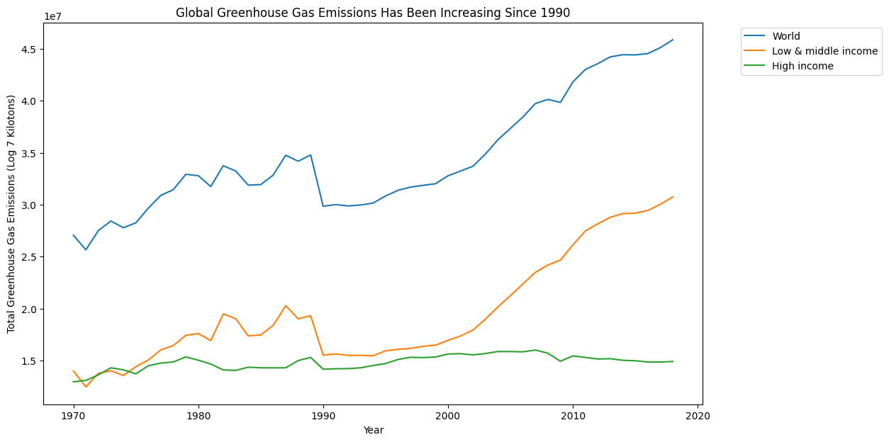
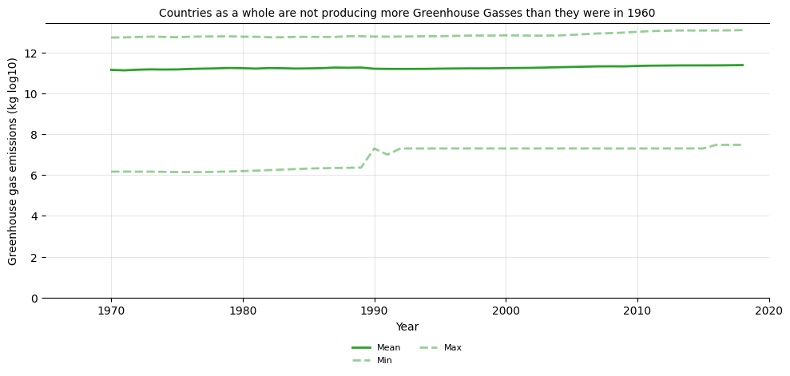

Proposition: Countries are releasing more greenhouse gases each year
FOR the Proposition

Design Decisions and Rationale:
- Plotting linear totals instead of log-transformed values — Score: +2 (fully earnest) Using a linear y-axis lets the actual scale of the increase show up visually as the World line climbs from roughly 27 million kilotons in 1970 to roughly 46 million by 2018, and that growth is immediately obvious from the slope. A linear scale is the right choice when you want readers to perceive the magnitude of change as it actually is, especially when the data doesn't span enough orders of magnitude to need a log transform. The trade-off with a linear scale is that the smaller-magnitude lines can look compressed near the bottom of the chart, but that's a real reflection of the data's actual proportions. High-income emissions are much smaller than the world total, and a linear axis shows that. A log scale would have artificially evened out the spacing between the lines, making the differences in scale less obvious and arguably distorting what the data is saying. Keeping things linear means readers can immediately see both the shape of each trend and the relative size of each group
- Showing three income groupings on the same axes — Score: +2 (fully earnest) Plotting World, Low & middle income, and High income on the same chart lets readers actually compare them instead of just looking at one global number. The breakdown is what makes the chart interesting as you can see that high-income countries flattened out around 1990 while low and middle-income countries kept climbing fast, which tells the reader something a single global line never could: most of the recent growth is coming from developing countries industrializing, not from wealthy ones getting worse. Without this split, the World line on its own would just look like steady growth with no explanation. The trade-off is that three lines on one chart can be a little more to digest, but with only three categories it stays easy to read.
- Using sum totals instead of cross-country averages — Score: +2 (fully earnest) The chart relies on the World Bank's pre-aggregated totals for each grouping rather than averaging emissions across countries. This matters because the natural reading of "global emissions" is the total amount of greenhouse gas being released into the atmosphere, not the average per country. Using totals is the right aggregation here because the question being asked is (are emissions rising?) is fundamentally about totals not averages, and the chart answers that question directly. Averages would have been technically a defensible value to use but heavily misleading, since they hide the contributions of the largest emitters by treating every country as an equal data point which does not paint a true picture on the issue.
- Using distinct colors for each line instead of matching them — Score: +1.5 (earnest) The three lines are plotted in clearly different colors (blue, orange, green), which makes it easy to track each of the groupings individually and compare their trajectories. This is a meaningful contrast with the deceptive chart, where all three lines were the same shade of green, which in turn made them visually blur together and discourage readers from looking at each one separately. Distinct colors signal to the reader that these are three separate stories worth tracking, rather than three variations of the same trend. The choice also pays off in how the reader's eye moves across the chart. Instead of getting lost in a bunch of similar-looking lines, you can lock onto a single color like orange and watch it climb past green around 2005, a moment that would be almost impossible to catch if everything were the same shade or color. That kind of visual clarity is what turns a chart from a picture where it's hard to distinguish anything into something a reader can actually analyze and reason with.
- Using a descriptive title rather than a persuasive one — Score: +1.5 (earnest) "Global Greenhouse Gas Emissions Has Been Increasing Since 1990" describes what the chart shows rather than telling readers what they should conclude about it. It points to a real, verifiable trend in the data which is that the World line clearly climbs upward across the visible range and lets readers reach the conclusion themselves by looking at the chart. This is a meaningful contrast with the deceptive chart, where the title made a claim that contradicted the data and tried to plant a conclusion before readers had even looked. A descriptive title allows the reader the ability to interpret what they're seeing, while a persuasive title attempts to do the interpreting for them.
AGAINST the Proposition

Design Decisions and Rationale:
- Log10 transformation of the y-axis — Score: -2 (fully deceptive) Applying log10 to greenhouse gas emissions is a deceptive choice for this visualization. Global emissions have roughly tripled since 1970, but a log scale compresses that kind of multiplicative growth into a tiny visual bump that looks essentially flat. Log scales are genuinely useful when your data covers a huge range and you actually want readers to focus on percentage changes rather than absolute ones, but here log is used to mask a real upward trend into a horizontal-looking line. A linear scale would have shown the mean climbing visibly. A fairer version would either split countries into separate small charts or show per-capita emissions on a regular linear axis. Log specifically is chosen because it hides this. What makes this especially misleading is that most casual readers don't fully comprehend what a log scale means, so they read visual flatness as actual flatness without questioning the transformation.
- Title that contradicts the data — Score: -2 (fully deceptive) "Countries as a whole are not producing more Greenhouse Gasses than they were in 1960" is basically a conclusion dressed up as a title: one that is not true. The mean line on the chart, rises from ~11.2 to ~11.4 in log10, which works out to about a 1.6x jump in real emissions. By putting a claim in the title, it essentially is telling readers what to think before they even look at the chart, and in this instance, a flat-looking visual seems to further back up what the title intends. This is one of the most deceptive parts of the whole chart as even with all the axis manipulation, something neutral like "GHG emissions, 1970–2018 (log scale)" would let people notice the upward drift on their own. The persuasive title shuts that down deceiving the reader before eyes are even laid on the graph.
- Forcing y-axis to start at zero on a log scale — Score: -1.5 (deceptive) Setting ylim(bottom=0) on a log axis pushes all the actual data into the top quarter of the plot, leaving a huge empty whitespace from 0 to ~6 that covers up the real signal in the 11-13 range. On a linear scale, starting at zero is the more default standard, but on a log scale it does not make sense (log10 of 0 is undefined) and the only effect is to make the lines look like flat horizontal lines floating near the top of an otherwise empty chart. Usual log plots tightly bound the y-axis to the data range. It was kept because the empty space amplifies the "countries are not producing more greenhouse gasses” impression. This choice also exploits a common idea readers have absorbed which is that "axes should start at zero" in order to make a deceptive chart look more trustworthy than it would with a tighter y-axis
- Cross-country mean instead of global sum — Score: -1.5 (deceptive) Aggregating by mean across all countries answers a different question than the title implies. The title says "countries as a whole," which a reader reasonably interprets as global total emissions, and indeed global totals have risen sharply. But the cross-country mean treats, for example, Tuvalu and China as equal data points, so as new small-emitter countries enter the dataset and large emitters grow, the mean stays roughly flat even when the sum balloons up. It is deceptive as the right aggregation for the question being asked is sum, not mean, and mean is chosen because it gives the answer we want. Countries as a whole' is also a convenient way of phrasing the chart, because it sounds like a global total but can technically be defended as a per-country average.
- Converting kilotons to kilograms before plotting — Score: -1 (somewhat deceptive) The code multiplies emissions by 1,000,000 (KT_TO_KG = 1_000_000) to convert kilotons into kilograms before applying the log transform. Kilotons is the standard unit for country-level emissions reporting as it's what climate scientists and policy documents use. So converting to kilograms is unnecessary and makes the y-axis values harder to interpret. The real effect of the conversion is that it pushes the log10 values into the 11-13 range, which combines with the ylim(bottom=0) choice to create a huge empty area of whitespace below the data. If the values had been kept in kilotons, the log values would sit in the 5-7 range and the empty whitespace problem would be much less severe. The unit choice doesn't change what the data says, but it makes the deceptive axis manipulation work better, which is the primary reason it was made.
Final Reflection
The most surprising thing about this assignment was how easy it was to build a deceptive chart compared to a truthful one. Each individual choice in the misleading visualization such as the log scale, the cross-country mean, the y-axis floor at zero, the matched green colors all have a perfectly legitimate use case somewhere in data analysis. Log scales are great when data spans many orders of magnitude. Means are a reasonable summary statistic. Starting axes at zero is often the standard choice. The deception only emerges when these choices are stacked together so that they all push in the same direction, which in this case was toward visual flatness. No single decision really gives it away on its own, which is exactly what makes this kind of chart effective and dangerous as a critical reader has to comb through four or five layers to figure out what's wrong, and most readers usually will not bother. The earnest chart was actually harder to build, because we had to keep asking ourselves whether each choice was clarifying the data or quietly nudging the reader, and there were moments where the line between good design and subtle persuasion felt blurrier than we expected.
The other thing that was surprising was how much work the title does on both charts. Even with all the axis manipulation in the deceptive version, a neutral title would have let a careful reader notice the upward drift in the lines and reach their own conclusion. The biased title closed that door because it told the reader the lines were flat before they even looked, and the flattened visual then seemed to confirm the prior statement. On the unbiased chart, the title does the opposite job: it points to a real trend the data supports and it is up to the reader to verify it. Realizing this changes how one would think about chart design generally. Persuasion through framing is doing as much heavy lifting as the math, and choosing words on a chart is a design decision just as much as choosing colors or scales.
The line between acceptable persuasion and misleading isn't really about the techniques themselves, it is more about what those choices are doing for the reader. Picking a bold color to highlight a real trend is persuasion in service of the data, while using a log scale because it flattens the trend or writing a title that contradicts the lines on the page is persuasion working against it. What makes this project actually matter outside of doing this exercise is the topic itself. Charts like the deceptive one we built aren't just hypothetical examples, they're the same kind of thing that gets passed around online to argue that climate change isn't real. Most people scrolling past a flat green line under a confident title aren't going to stop and check whether the y-axis is on a log scale, or whether countries as a whole means a sum or a mean. They'll just walk away with the impression the chart wanted them to have, which is tha emissions have been stable for fifty years. The framing of climate change in public discourse shapes whether people think there's a problem to act on and how urgent it really is, and that has real consequences for global health. Rising emissions are tied to worsening air quality, the spread of diseases into new regions, food and water insecurity, and heat-related deaths, so a misleading chart isn't just bad analysis. It's a negative contribution to a conversation on an issue that is already costing lives. Persuasive design crosses over into unethical behavior when it only works because the reader didn't catch what was happening underneath, and on a topic like climate change, the cost of readers not catching it is a lot bigger than just one bad chart.